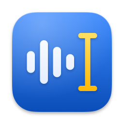
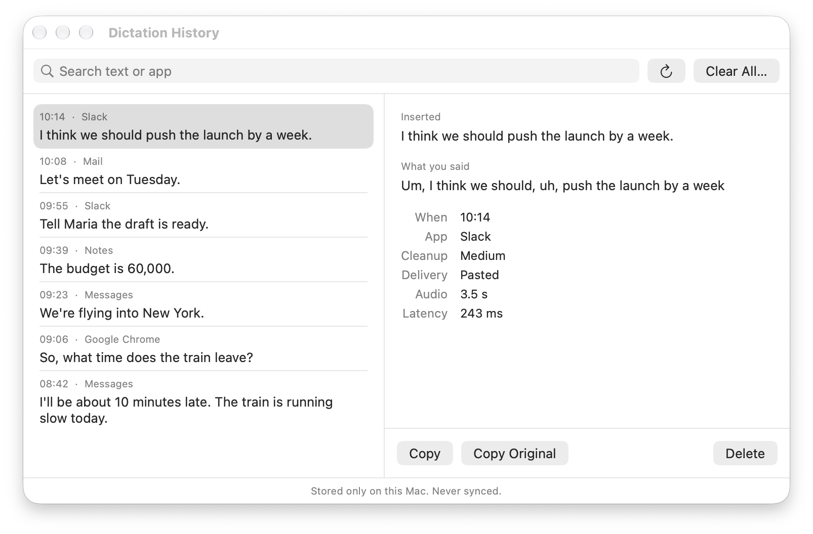
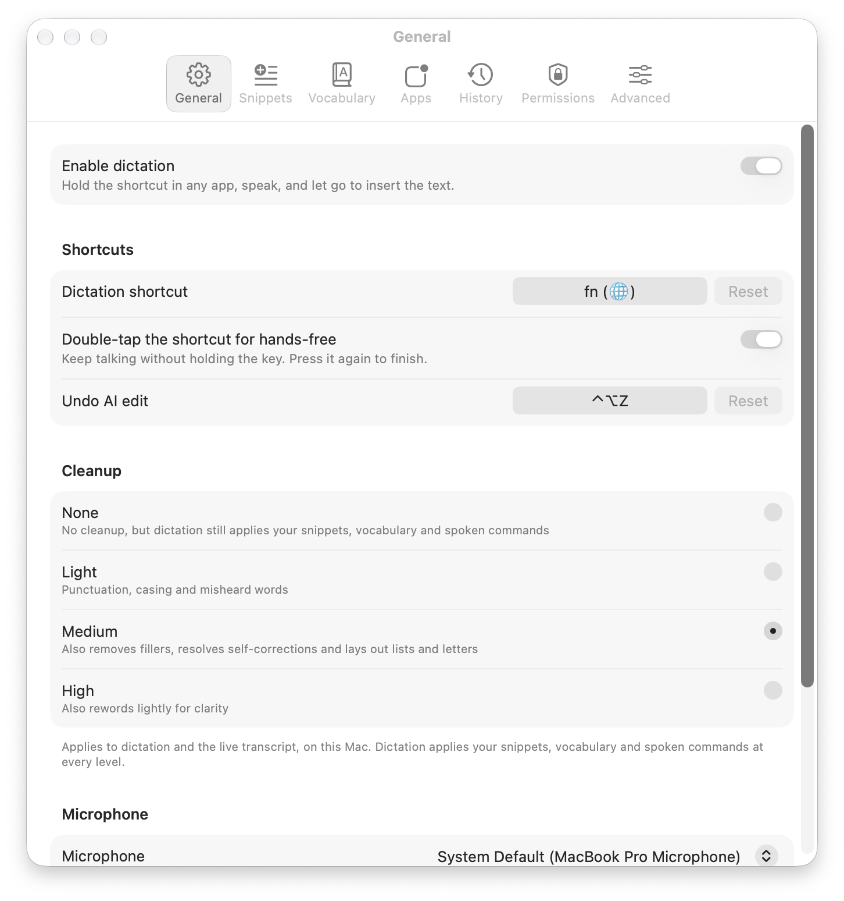
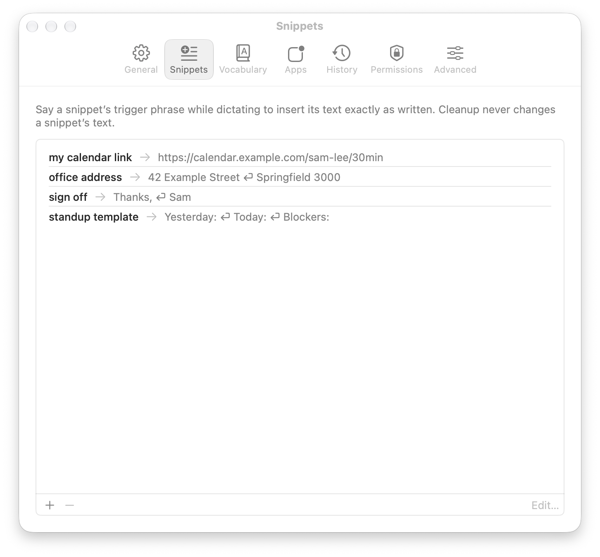
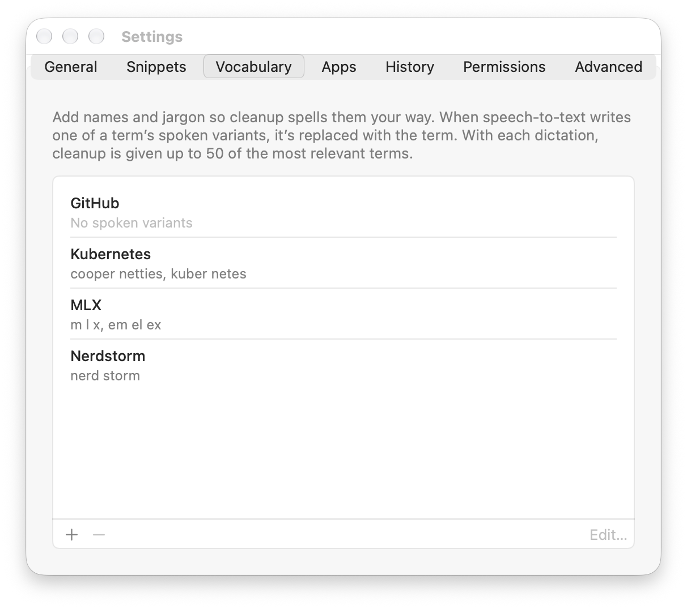
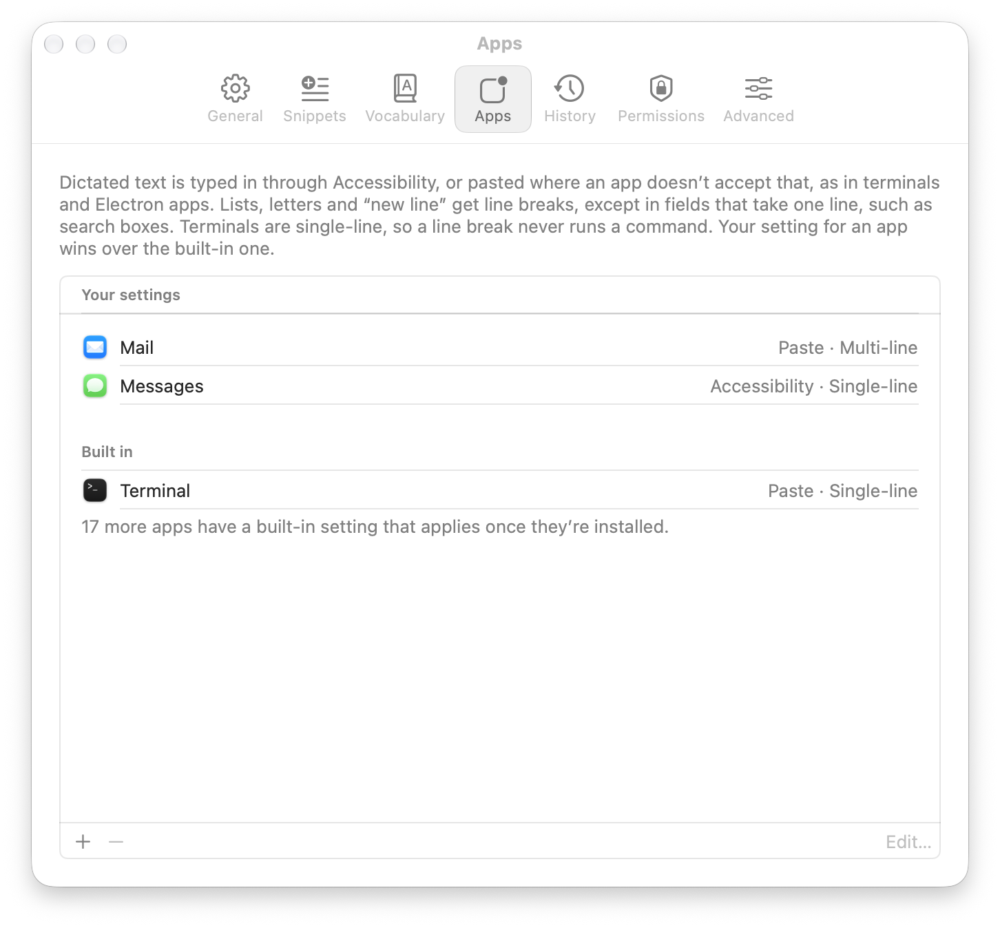

Private dictation for your Mac
Hold fn, speak and let go. Live Transcribe types what you said at your cursor, in almost any app, with the “um”s removed and the punctuation fixed. Speech recognition and cleanup run on your Mac, so what you say never leaves it.
What you say, and what it types
A reply dictated into Slack: hold the shortcut, speak, let go.
| You say | It types |
|---|---|
| Um, I think we should, uh, push the launch by a week | I think we should push the launch by a week. |
| Let’s meet on Monday, no wait, Tuesday | Let’s meet on Tuesday. |
| The budget is fifty thousand, I mean sixty thousand | The budget is sixty thousand. |
| So, uh, what time does the, um, the train leave | So what time does the train leave? |
Outputs from the dictation test set (synthetic speech) at the default cleanup level.
Dictation History keeps what you said next to what it typed, so you can copy your original wording. It stays on your Mac, and you can turn it off.

What it does
- Works in almost any app: email, chat, documents, browsers, code editors and terminals.
- Removes filler words and fixes punctuation and capitals.
- Follows your corrections: “Monday, no wait, Tuesday” becomes “Tuesday”.
- Lays out spoken lists, letters and line breaks in any app that takes several lines, chat apps included.
- Inserts saved text when you say its phrase, such as “my calendar link”.
- Spells your names and jargon correctly once you add them.
- Puts back exactly what you said if you press ⌃⌥Z within 30 seconds.
- Listens hands-free when you double-tap the key, until you tap it once more.
- Lets you choose how much it edits: None, Light, Medium or High.
- Shows a live transcript as you speak, for longer sessions.
- Recognises and cleans up a sentence in about 0.2 seconds on an M4 Pro.
Languages
Live Transcribe recognises 31 languages, and 22 Chinese dialects, and works out which one you’re speaking. Sinhala comes out in Sinhala script with English words in English letters, as people type it: “meeting එක cancel කරන්න”.
| Arabic | Cantonese | Chinese (Mandarin) | Czech |
| Danish | Dutch | English | Filipino |
| Finnish | French | German | Greek |
| Hindi | Hungarian | Indonesian | Italian |
| Japanese | Korean | Macedonian | Malay |
| Persian | Polish | Portuguese | Romanian |
| Russian | Sinhala | Spanish | Swedish |
| Thai | Turkish | Vietnamese |
Cleanup is written for English. Sinhala skips the cleanup model and is typed as recognised, and the other languages haven’t been tested with cleanup.
Settings
Shortcut and cleanup
Hold fn while you speak, or double-tap it to keep listening until you press it again. You can choose another key. Cleanup has four levels: None only applies your snippets and vocabulary, Light fixes punctuation, capitals and misheard words, Medium also removes fillers and follows your corrections, and High also rewords lightly for clarity.

Snippets
Save text you use often under a short phrase, such as a link, an address or a template. Say the phrase while dictating and the text goes in exactly as saved.

Vocabulary
Add names and jargon, with the ways speech recognition tends to mishear them, and they’re spelled your way.

Apps
For each app, choose how dictated text gets in, typed through Accessibility or pasted, and whether it may break across lines. Every app takes line breaks out of the box, so lists, letters and “new line” work in chat apps too. Terminals stay on one line, so a line break never runs a command, and so does any field that only takes one line, such as a search box.

Stays on your Mac
Speech recognition and cleanup run locally with Apple’s MLX. There is no account, no cloud service and no telemetry. The app goes online only to download its models from Hugging Face on first launch and, if you let it, to check GitHub for a new version about once a day. Dictation works offline. Your dictation history is kept on your Mac, and you can turn it off.
Install
- Download the latest release from GitHub and move Live Transcribe to your Applications folder.
- Open it. Setup walks you through microphone access, Accessibility and the fn key setting, while the speech models (about 2 GB) download.
- When the menu bar icon shows it’s ready, hold fn in any app and speak.
The app is signed and notarized by Apple, so macOS only asks you to confirm opening an app downloaded from the internet. It keeps itself up to date. You can also build it from source.
Requirements
- A Mac with Apple silicon
- macOS 14 or later (tested on macOS 27)
- About 2 GB of disk space for the models, and about 3 GB of memory while running
- Speech in one of the 31 languages